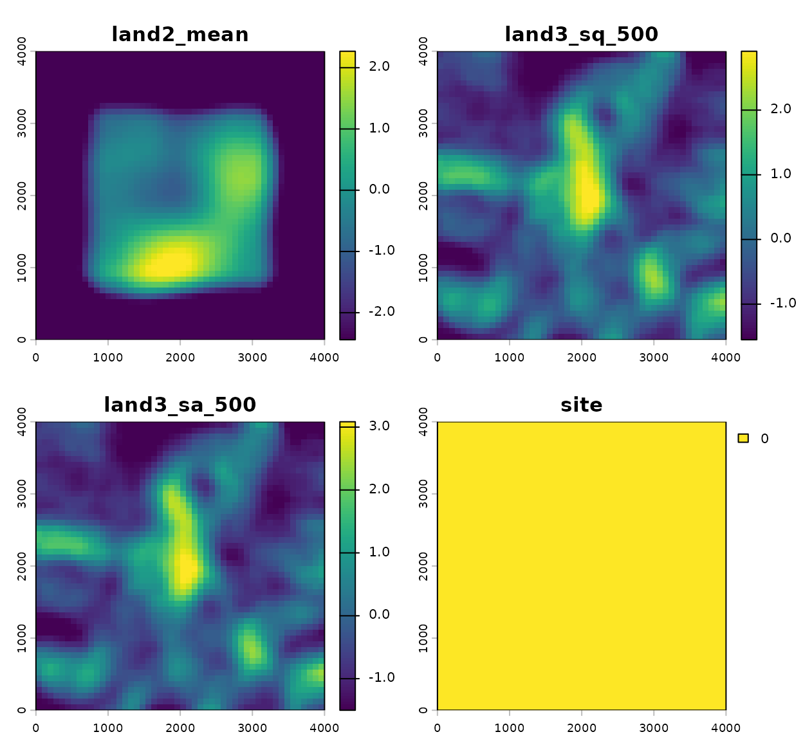

Surface Texture Covariates
Bill Peterman
Source:vignettes/surface_metric_covariates.Rmd
surface_metric_covariates.RmdWhat surface texture covariates measure
A kernel covariate in multiScaleR summarizes the
average value of a continuous raster in the neighborhood of a
point. A surface texture covariate summarizes something different: how
variable that surface is within the neighborhood. Two points
can have the same average elevation, NDVI, or canopy height, yet one can
sit in smooth terrain and the other in rugged terrain. Surface texture
metrics capture that difference.
surface_var() derives these metrics from a continuous
raster within a circular buffer, in the same way that
landscape_var() derives landscape metrics from a
categorical raster. The two functions are deliberately separate because
they expect opposite kinds of raster: landscape_var()
requires integer class codes, while surface_var() requires
continuous values. If you have not used the explicit covariate interface
before, read
vignette("landscape_metric_covariates", package = "multiScaleR")
first; this vignette assumes you are comfortable with
msr_vars().
This release supports six surface texture metrics, all borrowed from
the surface-metrology literature. Two describe dispersion (how spread
out the values are), two describe the shape of the value distribution,
and two describe the geometry of local change (slope and surface area).
Most are matched to the geodiv package so that
geodiv can be used to validate results; the exceptions are
noted below.
Surface metric reference
Each metric is computed on the continuous values within a circular
buffer centered on a sample point (or on each raster cell when
projecting with kernel_scale.raster()). In the formulas
below,
is a cell value in the neighborhood,
is the mean of those values,
is their standard deviation, and
is the number of finite cells.
| Code | Name | Definition | Reading |
|---|---|---|---|
sa |
Average roughness | Mean absolute deviation from the neighborhood mean. Robust to a few extreme cells. | |
sq |
RMS roughness | The sample standard deviation of the neighborhood. More sensitive to
large deviations than sa. |
|
ssk |
Skewness | Asymmetry of the value distribution. Positive when occasional high values dominate, negative when occasional low values do. | |
sku |
Kurtosis | Peakedness and tail weight relative to a normal distribution (excess kurtosis, so a normal surface gives 0). | |
sdq |
RMS slope | Root mean square of the local gradient magnitude: how steeply the surface changes (terrain or structural ruggedness). | |
sdr |
Surface area ratio | Percentage by which the true 3D surface area exceeds the flat area. A continuous edge-density analog: more relief gives a larger ratio. |
The dispersion metrics (sa, sq) are zero on
a perfectly flat surface and grow as the surface becomes more variable.
They are reported in the units of the raster itself: if
land3 ranges from 0 to 1, a roughness of 0.10 means the
values within the buffer deviate from their local mean by about a tenth
of that range. sa and sq measure the same
underlying idea (local spread) and are usually correlated;
sq weights large deviations more heavily because it squares
them, so it responds more strongly to a few unusual cells.
The shape metrics (ssk, sku) are
dimensionless and describe the form of the value distribution
rather than its spread, so they complement the dispersion metrics. The
geometry metrics (sdq, sdr) describe local
change. sdq measures gradient steepness; it is reported as
a true slope (rise over run), dividing the local elevation change by the
cell resolution. The matched geodiv function
geodiv::sdq() instead uses a cell spacing of one, so the
two agree after multiplying by the resolution. sdr is the
percentage by which the true 3D surface area exceeds the flat projected
area, computed in physical units (real elevation values and the real
cell size), so a tilted plane of slope
gives exactly
.
It behaves as a continuous edge-density analog: terrain that folds and
rises has more surface area per unit ground. Note that
geodiv::sdr() rescales the surface to a unit range and is
therefore dimensionless; the physical definition used here is the
interpretable one for terrain and, unlike the rescaled version, can be
projected by FFT. A few cautions are worth keeping in mind: the shape
metrics are noisier than dispersion and need a reasonable number of
cells in the buffer to be stable, and ssk,
sdq, and sdr can be correlated with
sq on many surfaces, so check their correlations before
interpreting them together.
A note on scale
A surface texture covariate behaves differently from a kernel-weighted mean as you change the radius. A larger radius does not simply smooth the same quantity over a wider area; it changes what is being measured. A small radius asks how rough the surface is in the immediate vicinity of a point (fine-grain texture). A large radius asks how variable the surface is across a broader extent, which folds in any large-scale gradient or patchiness. Keep this in mind when interpreting an optimized radius: the estimated scale is the neighborhood size at which within-neighborhood variability best explains the response, not the scale of an averaging window.
Load example data
This example reuses the simulated count data, survey locations, and
landscape raster included with multiScaleR. The data
contain 100 spatial sample points, which is enough to demonstrate the
workflow without making the vignette expensive to build.
data("landscape_counts")
dat <- landscape_counts
data("surv_pts")
pts <- vect(surv_pts)
land_rast <- rast(pkg_extdata("landscape.tif"))The raster stack contains two continuous layers suited to surface
texture metrics. land3 is a smooth, highly autocorrelated
surface (think elevation or canopy height), so its roughness varies
meaningfully from place to place. land2 is a noisier,
weakly autocorrelated surface. We also keep land2 because
the example counts were simulated to respond to its kernel-weighted
mean, which gives us a covariate with a genuine, interpretable scale of
effect.
surfaces <- c(land_rast$land2, land_rast$land3)
plot(surfaces)
plot(land_rast$land3, main = "land3 with survey points")
points(pts, pch = 19, cex = 0.6, col = "red")How to read these plots: Where land3
transitions sharply between low and high values, a buffer placed on the
transition contains a wide spread of values and will have high
roughness. Where land3 is locally flat (a broad light or
dark patch), a buffer contains similar values and roughness is low. The
roughness surfaces produced later in this vignette make that pattern
explicit.
Define derived covariates
Use msr_vars() to name the model covariates. Here
land2_mean is an optimized, kernel-weighted mean, while
land3_sq_500 and land3_sa_500 are fixed-radius
surface texture metrics computed within 500 m of each point. Computing
the surface metrics at a fixed radius keeps this example fast: they are
calculated once and are not re-evaluated during optimization.
scale_vars <- msr_vars(
land2_mean = kernel_var("land2"),
land3_sq_500 = surface_var("land3", metric = "sq", radius = 500),
land3_sa_500 = surface_var("land3", metric = "sa", radius = 500)
)
scale_varsThe distinction is the same as for landscape metrics:
-
land2andland3are source raster layers. -
land2_mean,land3_sq_500, andland3_sa_500are model covariates. - Only
land2_meanreceives an optimized sigma in this example.
Prepare model data and fit
Pass the specification to kernel_prep(). The returned
kernel_dat data frame holds the derived covariates, already
centered and scaled to unit variance.
kernel_inputs <- kernel_prep(
pts = pts,
raster_stack = land_rast,
max_D = 1500,
kernel = "gaussian",
scale_vars = scale_vars,
verbose = FALSE
)
head(kernel_inputs$kernel_dat)Combine the covariates with the response and fit the starting model.
df <- data.frame(dat, kernel_inputs$kernel_dat)
mod <- glm(
counts ~ site + land2_mean + land3_sq_500 + land3_sa_500,
family = poisson(),
data = df
)Optimize and interpret
Only land2_mean was left free, so optimization estimates
a single scale parameter while the two surface metrics stay fixed at 500
m. This keeps the example fast and mirrors a common analysis pattern:
optimize the covariate whose scale is the scientific question, and hold
the others at a biologically motivated buffer.
opt <- multiScale_optim(
fitted_mod = mod,
kernel_inputs = kernel_inputs,
verbose = FALSE
)
opt <- vignette_cache$surface$opt
summary(opt)
#>
#> Call:
#> multiScale_optim(fitted_mod = surface_mod, kernel_inputs = surface_inputs,
#> verbose = FALSE)
#>
#>
#> Kernel used:
#>
#>
#> ***** Optimized Scale of Effect *****
#>
#> Mean SE 2.5% 97.5%
#> land2_mean 417.5643 35.16722 347.7486 487.3801
#>
#>
#> ====================================
#>
#> ***** Optimized Scale of Effect -- Distance *****
#> Scale distances (map units) at 90%, two definitions.
#>
#> 2D, radius of the circle for the ideal untruncated kernel (selected):
#> Mean 2.5% 97.5%
#> land2_mean 896.08 746.26 1045.9
#>
#> 1D, along a line through the point (comparison):
#> Mean 2.5% 97.5%
#> land2_mean 686.83 572 801.67
#>
#>
#> ====================================
#>
#> ***** Fitted Model Summary *****
#>
#>
#> Call:
#> glm(formula = counts ~ site + land2_mean + land3_sq_500 + land3_sa_500,
#> family = poisson(), data = data)
#>
#> Coefficients:
#> Estimate Std. Error z value Pr(>|z|)
#> (Intercept) 0.46270 0.08676 5.333 9.64e-08 ***
#> site 0.07375 0.07911 0.932 0.351
#> land2_mean 0.68555 0.07751 8.845 < 2e-16 ***
#> land3_sq_500 -0.77677 1.07138 -0.725 0.468
#> land3_sa_500 0.98629 1.06937 0.922 0.356
#> ---
#> Signif. codes: 0 '***' 0.001 '**' 0.01 '*' 0.05 '.' 0.1 ' ' 1
#>
#> (Dispersion parameter for poisson family taken to be 1)
#>
#> Null deviance: 224.24 on 99 degrees of freedom
#> Residual deviance: 137.90 on 95 degrees of freedom
#> AIC: 344.58
#>
#> Number of Fisher Scoring iterations: 5
#>
#>
#>
#> ***** Follow-up recommendation *****
#> Recommended `max_D`: 1500
#> Recommended starting `sigma` values:
#> land2_mean
#> 417.5643
#>
#> Action:
#> Use the optimized parameters as efficient starting values if refitting.How to read the summary() output: The
scale section reports the estimated sigma for land2_mean,
with its standard error and 95% confidence interval, in map units
(meters here). Below it is the effective distance, which
converts sigma into a distance you can interpret on the ground, reported
two ways: the 2D radius of the circle that holds 90% of the weight of an
ideal, untruncated kernel on a plane (about 2.15 sigma for a Gaussian),
selected by default, and the 1D comparison distance along a line (about
1.65 sigma). Use the 2D radius to describe the area associated with
kernel weighting, while checking whether max_D, raster
edges, or missing cells truncate that area. Use
dimension = "1d" in summary(),
kernel_dist(), or plot() to restore the
original reporting definition used through version 0.7.3. Summaries
expose both tables as opt_dist_1d and
opt_dist_2d; their opt_dist and
opt_distance entries follow the selection. See
?kernel_dist for both definitions. The two fixed-radius
surface metrics do not appear in the scale section because their radius
was specified rather than estimated; they enter the model only as
ordinary covariates.
The model coefficients are on the Poisson log (link) scale, so they must be back-transformed to be interpretable. Because every covariate was centered and scaled, each coefficient describes the effect of a one standard deviation change in that covariate. Exponentiating gives the multiplicative change in expected count.
cf <- coef(summary(opt$opt_mod))
## Multiplicative change in expected count per 1 SD increase in each covariate
round(exp(cf[, "Estimate"]), 3)
#> (Intercept) site land2_mean land3_sq_500 land3_sa_500
#> 1.588 1.077 1.985 0.460 2.681For example, an exp() value of 1.20 for a surface metric
would mean that a one standard deviation increase in roughness is
associated with a 20 percent higher expected count, holding the other
covariates constant. Note an important caveat: these example counts were
simulated to respond to kernel-weighted means of land1 and
land2, not to surface roughness. The recovered scale for
land2_mean is therefore the meaningful quantity to
interpret here, and the roughness coefficients are best read as a
demonstration of the mechanics. In your own analysis, a surface texture
coefficient is interpreted exactly like any other scaled predictor.
Project covariates to rasters
kernel_scale.raster() understands
surface_var() specifications just as it does kernel and
landscape covariates. When a fitted multiScaleR object is
supplied, the optimized covariate uses its fitted scale and the
fixed-radius surface metrics use their specified radius. Setting
scale_center = TRUE returns the projected covariates on the
same centered and scaled footing as the model, ready for
terra::predict().

Projected model covariates at their fitted or fixed scales.
names(projected)
#> [1] "land2_mean" "land3_sq_500" "land3_sa_500" "site"How to read these plots: land2_mean is
a smoothed average surface, so it looks like a blurred version of the
source layer. The roughness layers (land3_sq_500,
land3_sa_500) look different: they are bright where
land3 changes rapidly within 500 m and dark where it is
locally uniform. Roughness maps highlight transitions and texture, not
high or low values. The stack also includes a constant site
layer filled with zeros: because site is a field-measured
covariate with no raster source, kernel_scale.raster()
appends a placeholder so the output can be passed directly to
terra::predict(). Replace it with a real surface if you
want to predict at a non-reference value of site.
Roughness surfaces without a fitted model
You do not need a fitted model to produce a roughness surface. Pass a
scale_vars object in which every covariate has a fixed
radius, and kernel_scale.raster() returns the
metric surfaces directly. This is useful for exploring how texture
varies across a landscape, or for comparing scales before committing to
a model.
sq_multi <- kernel_scale.raster(
raster_stack = land_rast["land3"],
scale_vars = msr_vars(
sq_200 = surface_var("land3", metric = "sq", radius = 200),
sq_500 = surface_var("land3", metric = "sq", radius = 500),
sq_900 = surface_var("land3", metric = "sq", radius = 900)
),
verbose = FALSE
)
plot(sq_multi, main = c("sq - 200 m", "sq - 500 m", "sq - 900 m"))How to read these plots: At 200 m the surface picks out fine, local texture, so roughness is patchy and concentrated near sharp transitions. At 900 m each buffer spans more of the underlying gradient, so roughness is smoother and generally higher. This is the practical face of the scale caution from the introduction: the radius changes the quantity, not just its resolution.
The sa and sq metrics emphasize roughness
slightly differently. Comparing them at a single radius shows where a
few extreme cells (which sq weights more heavily) drive the
signal.
sa_sq <- kernel_scale.raster(
raster_stack = land_rast["land3"],
scale_vars = msr_vars(
sa_500 = surface_var("land3", metric = "sa", radius = 500),
sq_500 = surface_var("land3", metric = "sq", radius = 500)
),
verbose = FALSE
)
plot(sa_sq, main = c("sa - 500 m", "sq - 500 m"))Projection of sq uses fast Fourier transform
convolution, and projection of sa uses a compiled focal
pass. Both reproduce the per-point calculation exactly; sq
is the faster of the two on very large rasters.
Distribution-shape and geometry surfaces
The same standalone projection works for the shape metrics
(ssk, sku) and the geometry metrics
(sdq, sdr). They answer different questions
than dispersion: skewness and kurtosis describe the form of the
value distribution in the neighborhood, sdq describes how
steeply the surface changes, and sdr describes how much
extra surface area that change creates.
shape_geom <- kernel_scale.raster(
raster_stack = land_rast["land3"],
scale_vars = msr_vars(
ssk_500 = surface_var("land3", metric = "ssk", radius = 500),
sku_500 = surface_var("land3", metric = "sku", radius = 500),
sdq_500 = surface_var("land3", metric = "sdq", radius = 500),
sdr_500 = surface_var("land3", metric = "sdr", radius = 500)
),
verbose = FALSE
)
plot(shape_geom,
main = c("ssk - 500 m", "sku - 500 m", "sdq - 500 m", "sdr - 500 m"))How to read these plots: The skewness surface is
positive where the neighborhood is dominated by occasional high values
and negative where low values dominate. The kurtosis surface is high
where a few extreme cells stretch the tails of the local distribution.
The sdq and sdr surfaces are both bright where
land3 changes steeply from cell to cell: sdq
as a slope and sdr as the extra 3D surface area that slope
produces, so they resemble ruggedness maps and are often correlated.
Because shape and geometry are noisier than dispersion, they are most
useful when a hypothesis specifically concerns asymmetry, tail behavior,
gradient steepness, or surface complexity rather than overall
variability.
Optimizing the scale of roughness
To estimate the scale of a surface texture covariate rather than fix
it, omit radius from surface_var(). The
covariate then receives its own sigma, which
multiScale_optim() estimates alongside the model.
scale_vars_opt <- msr_vars(
land2_mean = kernel_var("land2"),
land3_sq = surface_var("land3", metric = "sq")
)
kernel_inputs_opt <- kernel_prep(
pts = pts,
raster_stack = land_rast,
max_D = 1500,
scale_vars = scale_vars_opt,
verbose = FALSE
)Optimizing a surface texture radius is well defined, but it costs
more than optimizing a kernel-weighted mean: at each candidate radius
the metric is recomputed for every sample point, since (unlike a kernel
mean) it cannot be read off a precomputed distance binning. Surface
metrics are continuous in the radius, so they tend to optimize smoothly.
Start with fixed radii to confirm the workflow, then optimize once the
model structure is settled. Optimized unweighted surface
metrics are not currently supported with kernel = "expow",
because the exponential-power shape parameter does not apply to a
hard-edged buffer. The weighted form below does use the kernel, so it is
supported with every kernel.
Weighted roughness: the scale of effect of heterogeneity
The surface metrics above summarize a hard-edged circular
neighborhood: every cell within the radius counts equally. Setting
weighted = TRUE instead weights each cell by the model’s
distance kernel, the same Gaussian (or exponential) kernel used for a
kernel_var() mean, and optimizes the kernel scale (sigma)
rather than a hard radius.
This changes both the question and the statistics. A weighted
sq answers “at what spatial scale does the
variability of this surface, measured with a smoothly decaying
neighborhood, best predict the response?” Because the kernel weights
change smoothly as sigma changes (cells do not jump in and out of a hard
edge), the likelihood is smooth in sigma, so
multiScale_optim() recovers the scale with a standard error
just as it does for a kernel-weighted mean. This is the natural way to
ask about the scale of effect of heterogeneity, as opposed to the scale
of effect of the mean.
weighted_vars <- msr_vars(
land3_sq_weighted = surface_var("land3", metric = "sq", weighted = TRUE)
)Weighting is available for the distribution metrics (sa,
sq, ssk, sku) but not the slope
metric (sdq), and the scale is always optimized, so no
radius is supplied. To see the difference a weighting
makes, the projection below compares a hard-radius sq at
500 m with a Gaussian-weighted sq at the same nominal
scale.
sq_hard <- kernel_scale.raster(
raster_stack = land_rast["land3"],
scale_vars = msr_vars(sq_hard = surface_var("land3", metric = "sq",
radius = 500)),
verbose = FALSE
)
sq_weighted <- kernel_scale.raster(
raster_stack = land_rast["land3"],
scale_vars = weighted_vars,
sigma = 500, # the kernel scale for the weighted metric
kernel = "gaussian",
verbose = FALSE
)
plot(c(sq_hard, sq_weighted), main = c("sq hard radius 500 m", "sq weighted sigma 500"))How to read these plots: Both maps show local
roughness at a 500 m scale, but the weighted version transitions more
smoothly because nearby cells contribute more than distant ones. In a
model, the practical payoff is the optimization: the weighted form gives
multiScale_optim() a smooth objective in sigma and returns
the scale of heterogeneity with a confidence interval. Use the weighted
form when the scale of heterogeneity is the scientific question; the
hard-radius form remains convenient when you have a biologically
motivated buffer or want a metric that matches the geodiv
definitions exactly.
Practical guidance
- Use a surface texture covariate when you expect the variability of a continuous surface, rather than its average, to matter ecologically: terrain ruggedness, vegetation-structure heterogeneity, thermal patchiness, and similar.
- Choose
sqwhen large local deviations are ecologically important, andsawhen you want a measure that is less sensitive to a few extreme cells. - A surface metric and a kernel-weighted mean from the same source layer answer different questions and can both be included; check their correlation before interpreting either in isolation.
- Use a fixed radius when you have a biologically motivated buffer or want a fast model; optimize the radius when the scale of heterogeneity is itself the question.
- Use
weighted = TRUE(forsa,sq,ssk,sku) when you want the scale of heterogeneity estimated with a smooth likelihood under the model’s kernel; keep the default hard-radius form when you want a fixed buffer or exact agreement withgeodiv.
Quick reference
## 1. Define covariates: an optimized kernel mean plus fixed-radius roughness
scale_vars <- msr_vars(
land2_mean = kernel_var("land2"),
land3_sq_500 = surface_var("land3", metric = "sq", radius = 500),
land3_sa_500 = surface_var("land3", metric = "sa", radius = 500)
)
## 2. Extract and prepare the covariates around each point
kernel_inputs <- kernel_prep(pts, land_rast, max_D = 1500,
scale_vars = scale_vars, verbose = FALSE)
## 3. Fit the starting model
df <- data.frame(dat, kernel_inputs$kernel_dat)
mod <- glm(counts ~ site + land2_mean + land3_sq_500 + land3_sa_500,
family = poisson(), data = df)
## 4. Optimize the free scale parameter(s)
opt <- multiScale_optim(fitted_mod = mod, kernel_inputs = kernel_inputs)
summary(opt) # sigma + effective distance, on map units
## 5. Project covariates for prediction (centered and scaled like the model)
projected <- kernel_scale.raster(land_rast, multiScaleR = opt,
scale_center = TRUE, clamp = TRUE)
## Standalone roughness surface, no model required
sq_500 <- kernel_scale.raster(
land_rast["land3"],
scale_vars = msr_vars(sq_500 = surface_var("land3", metric = "sq", radius = 500))
)Summary of key functions
| Function | Purpose |
|---|---|
surface_var() |
Define a continuous surface texture covariate (sa or
sq). |
msr_vars() |
Collect covariate specifications into one object. |
kernel_prep() |
Extract and prepare covariates around each point. |
multiScale_optim() |
Estimate the scale of effect for optimized covariates. |
kernel_scale.raster() |
Project covariates to rasters, with or without a fitted model. |
See also
-
vignette("landscape_metric_covariates", package = "multiScaleR")for categorical landscape metrics and themsr_vars()interface. -
vignette("multiScaleR_Guide", package = "multiScaleR")for the full modeling workflow and model interpretation. -
vignette("spatial_projection_clamping", package = "multiScaleR")for projecting fitted models to prediction surfaces.